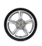
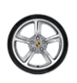

356
L'élégance indémodable

911
Courbes Mythiques
Courses
Porsche 919 Hybrid
Lifestyle
German sport brand
Fill out my online form.
HTML Forms powered by Wufoo.
Que recherchez-vous ?
L'élégance indémodable
Courbes Mythiques
Porsche 919 Hybrid
German sport brand